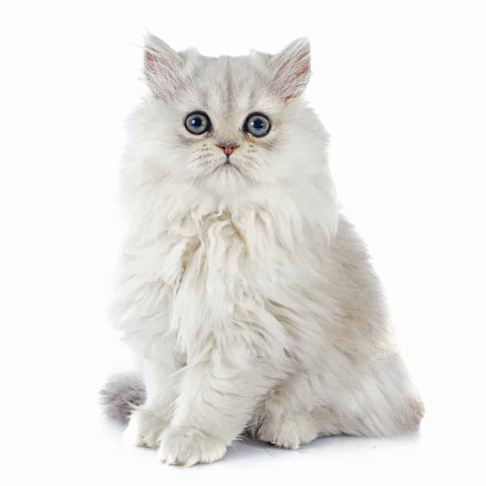

คือหนึ่งในสายพันธุ์น้องแมวขนสวยยาวเงางาม และจัดเป็นหนึ่งในสิบสายพันธุ์แมว ที่ได้รับความนิยมนำมาเลี้ยงมากที่สุดบนโลกสายพันธุ์หนึ่ง ด้วยขนที่สวย บวกกับความน่ารัก ความจงรักภักดีต่อเจ้าของ รักความสงบ ไม่ส่งเสียงดังเอะอะ และความฉลาดแสนรู้ของแมวเปอร์เซีย ทำให้น้องแมวสายพันธุ์นี้มัดใจให้หลายคนตกหลุมรักกันแบบถอนตัวไม่ขึ้น มาทำความรู้จักน้องแมวเปอร์เซีย กันให้มากอีกนิด แล้วคุณจะหลงรักน้องแมวเปอร์เซียยิ่งขึ้นไปอีก
ลักษณะเด่นของแมวเปอร์เซียอยู่ที่ตาที่โต กะโหลกกลม หน้าแบน แก้มแน่น และใบหูขนาดเล็กที่มีปลายมน ขนาดหัวที่ใหญ่ของแมวเปอร์เซียช่วยพยุงคอที่สั้น หลายคนอาจเคยสังเกตเห็นว่าแมวเปอร์เซียมีหน้าตาหลายแบบ เช่น หน้าแบนสุดๆ แบบ Peke-face หรือเป็นลุคเก่าที่จะเห็นว่าใบหน้าแมวเปอร์เซียมีความกลมขึ้นมาอีกนิดแบบ Doll-face ซึ่งอายุเฉลี่ยของแมวสายพันธุ์นี้อยู่ที่ 10 – 15 ปี มีความยาวลำตัว 14 – 18 นิ้ว (ไม่รวมความยาวหาง) น้ำหนักประมาณ 4 – 6 กิโลกรัม รูปร่างของแมวเปอร์เซียจะเป็นสัดส่วนของกล้ามเนื้อเป็นส่วนใหญ่ ขาสั้น หนา และมีอุ้งเท้าขนาดใหญ่ หางแมวเปอร์เซียจัดว่าไม่ยาวมากเมื่อเทียบกับสัดส่วนลำตัวของแมว
